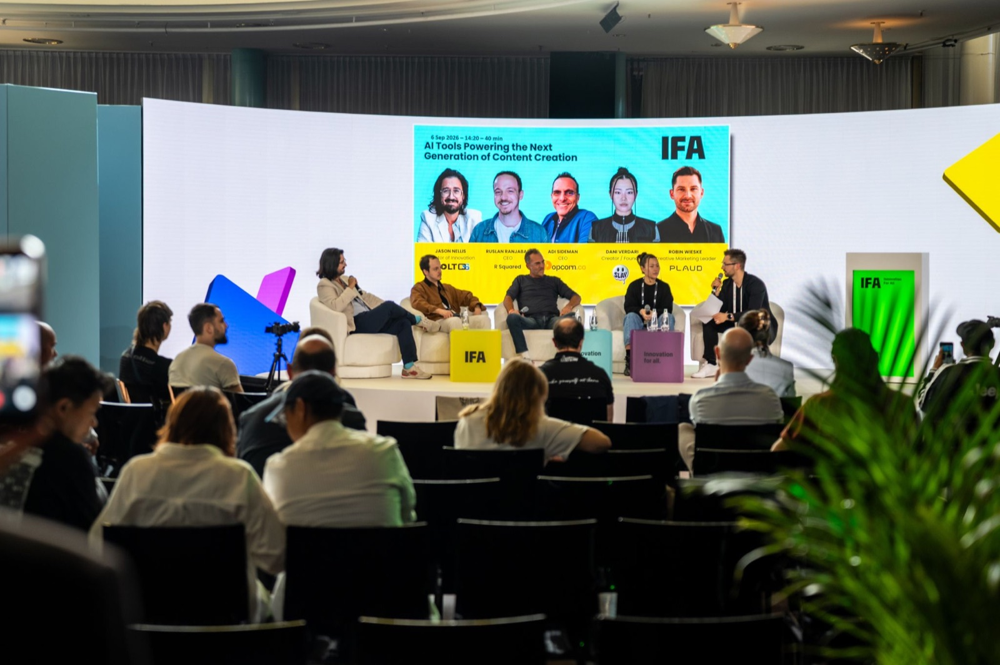
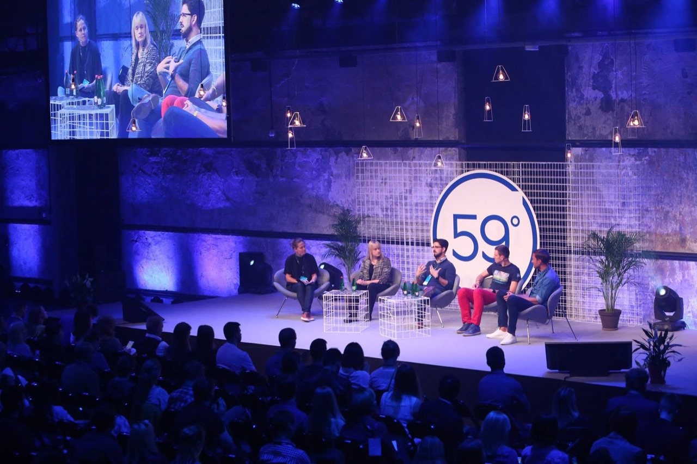
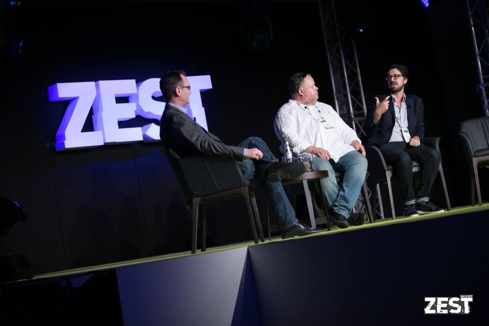

I speak from inside
the things I built.
I've been in the creator economy long enough to watch it rename itself twice — early streaming at Hulu, social commerce at a company Facebook bought, now AI and creator IP. The talks aren't a survey of other people's frameworks. They're what I watched happen from the inside, and what it cost.



Guest lectures at Northwestern, Howard, and Georgetown · Conference panels across Europe · Co-founded Packagd (acquired by Meta), and spoke across internal Meta events including the Games Day broadcast.
Pick a talk. I'll bring the rest.
Each one is a real talk I can give tomorrow — not a title I'd have to go build a deck for. I'll shape it to your room and your run of show.
Your AI Strategy Is Probably Theater
Most organizations have an AI strategy that's really a press release.
- A test for telling real AI leverage from expensive theater
- Where AI creates a real advantage today, and where it's still noise
- How to hold a point of view that survives the next hype cycle
The Media Cycle No One Believes Is a Cycle
Every wave looks like a revolution from the inside — until you've lived through three of them.
- The pattern media waves keep repeating
- How to tell where we really are in the current one
- What nearly twenty years inside three of them says about the next
Why Some Creators Break Through and Most Don't
After 100+ conversations with creators on Building Value, the same handful of patterns keep showing up.
- The handful of patterns that separate the ones who break out
- Why most creator-economy advice talks right past them
- A lens platforms and brands can use to spot it early
Fandoms Are Infrastructure, Not Marketing
Audiences don't become fans by accident — they become fans through infrastructure most companies never think to build. How creator-platform relationships are being rebuilt from the ground up, and what comes after the influencer era.
What It's Like to Sell the Thing You Built
An operator's view of building a product org from zero, navigating an acquisition from the acquired side, and the strange experience of handing your work to someone else — and what that teaches you about building the next thing.
Leading From a Different Time Zone
Operating at an executive level from Europe, building for global teams and US-based companies. What remote-first leadership demands once the time-zone gap stops being a scheduling problem and starts being a strategic one.
Building Value — the podcast.
A hundred-plus conversations on how creative work becomes a business, now relaunching with a new look. The full archive and what's coming live on their own page.
The TikTok Magic of a Former McDonald's Chef! [Chef Mike Haracz]
A former McDonald's corporate chef on building a following on TikTok from scratch — what brands get wrong about authenticity, and how a personal voice can outperform a marketing budget.
Hulu's First PM [Betina Chan-Martin]
Hulu's first product manager on what it took to build a streaming product from zero — and the lessons from an early-stage team that don't survive the transition to scale.
How I show up.
On the ground, not on a flight.
I live twenty minutes from the Palais des Festivals. MIPCOM, MIPTV, Cannes Lions, and Monaco are a train ride, not a transatlantic flight. For the rest of Europe I travel. For North America I'm remote-fluent and morning-friendly.
Tell me about your event.
Tell me who's in the audience and what you want them walking out believing — I'll tell you fast whether I'm the right fit. For European events, travel is a train ticket, not a business-class fare.
- Conferences and industry summits in media and technology
- Executive off-sites and leadership team sessions
- Podcasts and long-form interview formats
- Advisory engagements with founders and exec teams building in this space
- University and professional development programs
- Based in Cannes — Europe in person, North America remote